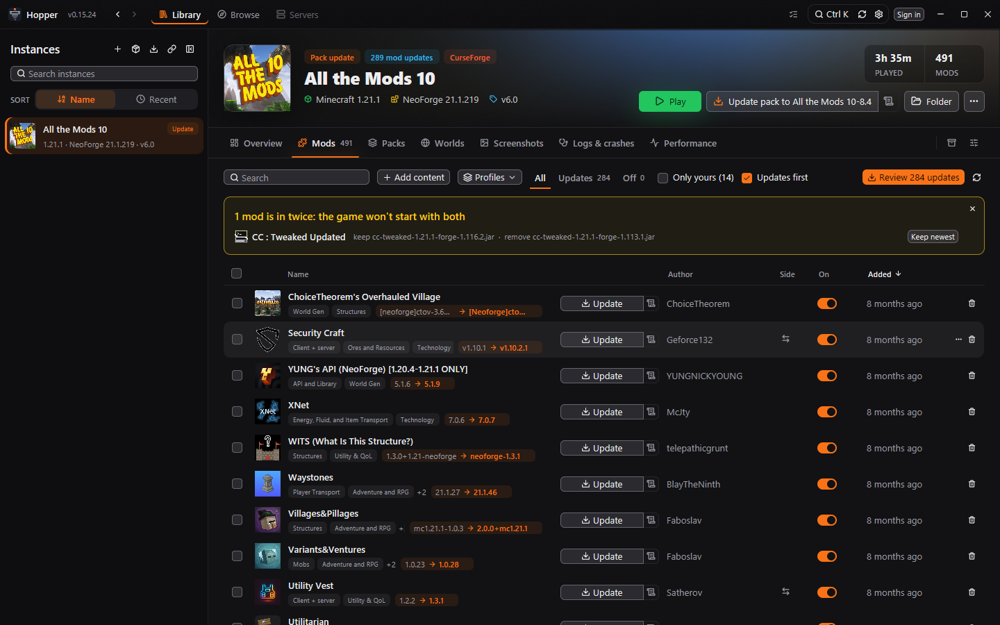
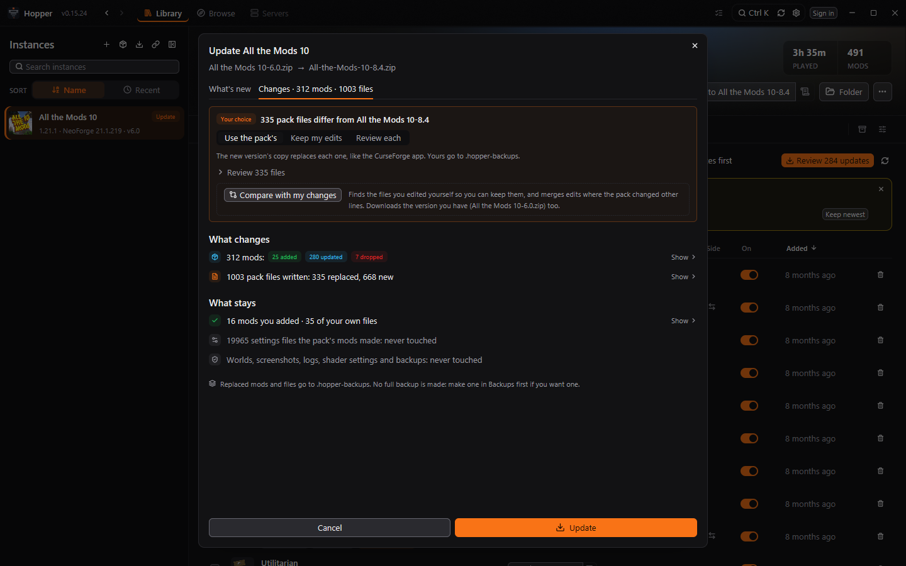
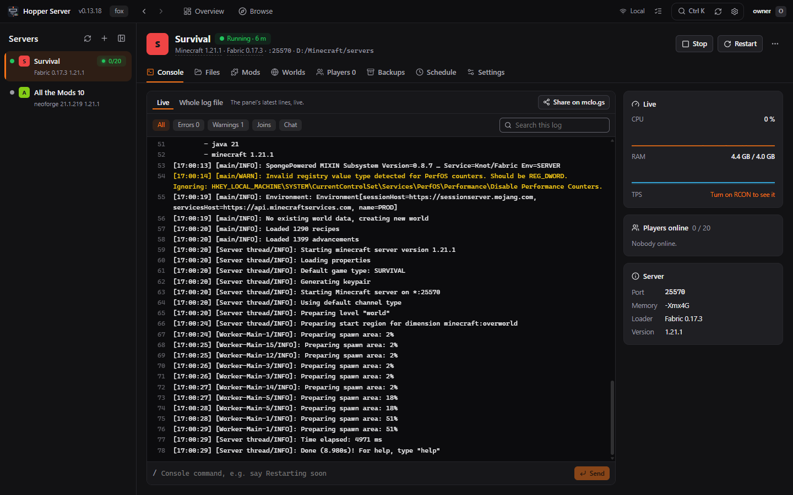
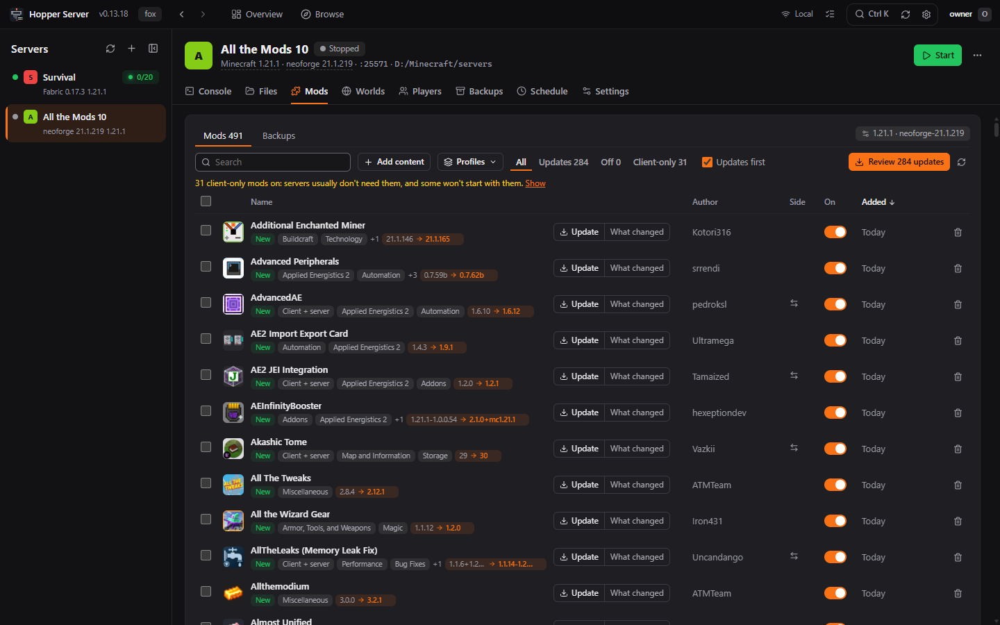
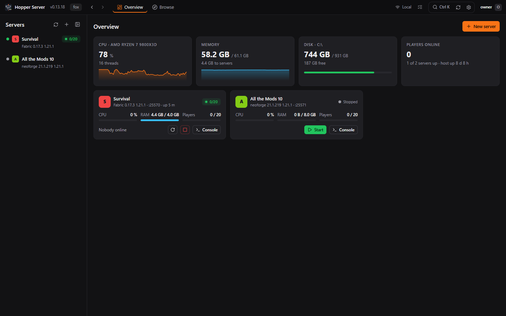
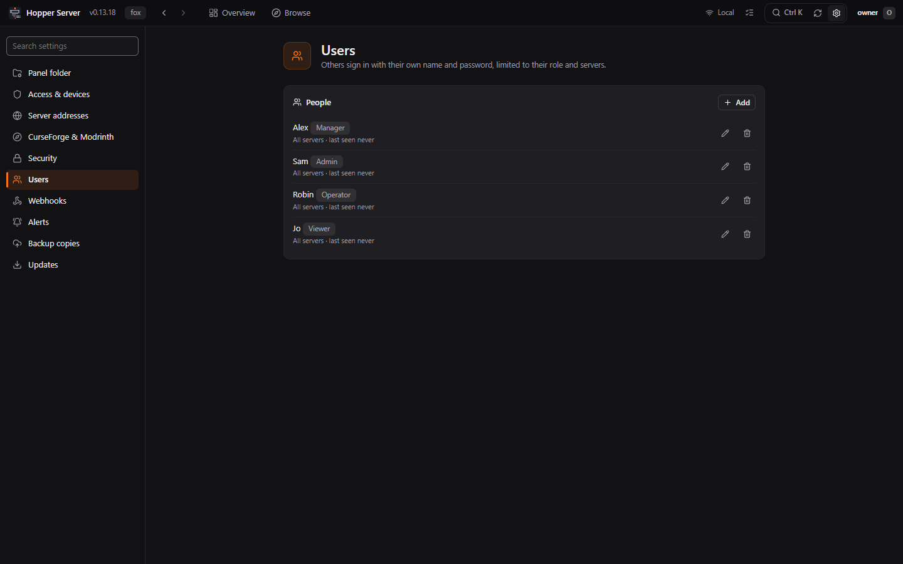

Hopper is a native Minecraft modpack launcher for Windows. Play CurseForge and Modrinth packs and keep hundreds of mods up to date. Hopper Server runs your Minecraft servers on Windows, Linux or Docker, with a web panel you open in any browser, and keeps them in step with your packs.
Free and open source (MIT) · One exe, no admin rights · Both update themselves
NativeRust on GPUI. No Electron, no browser inside.
In placeReads CurseForge, Prism, Modrinth App and more without copying.
1,000+ modsUpdates, side checks and profiles that stay fast.
Self-hostedHopper Server: your servers, your PC or VPS, any browser.
Why Hopper
Built for my own play, grown out of need
Hopper started as a tool for my own modded play and servers. I wanted the everyday steps down to one click: every mod changelog since your version right from the mod list, pack updates that keep the mods you added, and servers that stay in step with their pack.
Every feature since has come from something I needed while playing and running servers: performance tracking when a pack felt sluggish, Server sync when keeping the server up to date became a chore. If you've hit the same walls, it should feel right at home.
Full disclosure: I have a full-time job, and Hopper is what I do after it. To keep up, a lot of the code (especially the boilerplate) is written by AI. The testing isn't. Every feature gets clicked through by hand, by me, in the real app, usually with a modpack open in the background. Claude does the typing; I do the poking.
— watdafawx, Hopper's developer
Features
Everything a modded player needs
Hopper covers playing packs, then goes further: pack updates that keep your changes, crash help that names the mod, and real server tools.
Library
Every instance with its pack art, playtime, mods, worlds and screenshots. Resource packs, shaders and data packs work like mods. Export as a CurseForge or Modrinth pack.
Browse
Search CurseForge and Modrinth for mods, modpacks, shaders, resource packs, data packs and worlds. Dependencies come along, and installed mods show your version.
Pack updates
Read every changelog in between, then see what changes and what stays. Your own mods, configs and scripts are kept, and only the new version is downloaded.
Config editor
Mod configs as switches, pickers and fields, with each mod's own descriptions, ranges and defaults. Search every setting, or edit the text.
Crash help
Catches a crash in seconds, names the mod behind it (certain, likely or possible) and offers the fix: install what's missing, put the last working version back, or play without it.
Performance
Each run is recorded: FPS, 1% lows, CPU, RAM, GPU and GC pauses. Advice you can apply in one click, and a memory and Java flags generator. Nothing is injected.
Servers
Pair with Hopper Server for console, files, mods, backups and ping. Crafty, MCSS and Pterodactyl work too, or host a pack's server on this PC.
Server sync
Compare a server with its pack, mod by mod and config by config, and push or pull. Client-only mods stay off. Works over the network with Hopper Server.
Undo and revert
Mods that load badly are flagged before you press Play. Put a mod back to the version that worked, lock it, take a snapshot, or undo any change.
Other launchers
Manage Modrinth App, Prism / MultiMC, ATLauncher, GDLauncher and FTB App instances where they already are.
Accounts
Several Microsoft accounts. Try skins on a 3D model that walks, runs, swims and dances, then change your skin, cape and name.
Peers and AI assistants
Sync an instance with a friend's PC on your network. Let an AI assistant read your mods, logs and crashes (off until you turn it on).
Mods
Hundreds of updates, one click
See every mod with its file, author, side and the version it moves to, and read what changed before you update.
Updates shown old → new, with a review that sorts small fixes from bigger jumps
Every changelog since your version in one window, with "Update to this" or "Roll back"
Warnings before you press Play: a mod in twice, a missing dependency, a loader that's too old
"Only yours" shows the mods you added, and pack updates keep them
Lock a mod to its version, switch it between CurseForge and Modrinth, or edit its config

Pack updates
Update the pack, keep your changes
One window for every pack update: what's new first, then exactly what changes and what stays.
The changelog of every version in between, with the pack author's advice up top
Mods added, updated and dropped, and the pack files that change
Your own mods, configs and KubeJS scripts stay. "Compare with my changes" merges your edits
Close the window and it keeps going. Replaced files go to the instance's backups folder

Logs & crashes
A crash, explained
Hopper reads the crash report and the game's logs, and tells you which mod is behind it and what to do.
Mods graded certain, likely or possible, with the reason and what happened in order
Fixes in one click: install a missing mod, update the loader, put the last working version back, or play without it
The live log, debug.log and every crash report, with search and "errors and warnings only"
Share a log on mclo.gs with your name, IP addresses and tokens taken out
Optional: install Crash Assistant, KostromDan's mod that explains crashes in game
Server sync
Server and pack, always in step
Update the pack, then update the server to match. Hopper knows which mods belong on a server and which don't.
Mod by mod: in sync, update, client only, server only
Configs compared too, setting by setting
Over the network with Hopper Server, or straight to a folder on this PC or a share
Hopper Server
Your own server panel, in any browser
Hopper Server runs your Minecraft servers on a Windows PC, a Linux box or VPS, or in Docker. Open its panel from any browser, share it with friends, and pair it with Hopper so your servers follow your packs. You don't need Hopper to use it.
WindowsLinux x64Linux ARM64Docker (amd64, arm64)

Console and files
A live console with history and filters. A file explorer with an editor that checks configs before saving, earlier versions of every file, search inside files, and SFTP.
Mods in step with the pack
The same Mods table as Hopper: updates with changelogs, locks, profiles. Browse CurseForge and Modrinth, and update a server from its pack with a review of every change.
Backups that cost little
A second backup of an unchanged server takes seconds and almost no space. Keep rules, restore all or a few files, and encrypted off-site copies to a share, SFTP, S3 or another Hopper Server.
Schedules and alerts
Daily restarts with warnings in chat, restart after a crash, scheduled backups. Alerts for crashes, low TPS, a full drive or low memory, sent to Discord or any webhook.
Crash help on the server
The same crash card as Hopper: which mod, how sure, what happened, and the fix, from putting an older version back to taking a client-only mod off the server.
Memory and Java
A memory slider, the right Java for each Minecraft version (found or downloaded), and a Java flags generator that explains each flag. See exactly how the server starts.
Addresses and sleep
Players join survival.mc.example.com instead of an IP and port, every server on one port. Empty servers go to sleep and wake when someone joins.
People and roles
Add friends with their own sign-in: Manager, Admin, Operator or Viewer, limited to the servers you pick. Two-factor sign-in, an audit log and API tokens.
Safe on the internet
HTTPS from the first start, or a Let's Encrypt certificate for your domain. Works over your network, Tailscale or an open port; signing in from the internet needs two-factor.
Hopper + Hopper Server
Pair it with Hopper
Hopper finds Hopper Server on your network, or takes its address. Check the 6-digit code, allow it in the panel, and the panel's servers show up in Hopper.
Console, files, mods, players, backups and schedules from Hopper, no shared folder needed
Server sync and server pack updates over the network
Ping and TPS next to each server, and a dot on a pack's server button
Pair as many panels and PCs as you like

Server panels
Hopper Server, or the panel you already use
Hopper works best with Hopper Server, and also talks to Crafty Controller 4, MCSS and Pterodactyl (or Pelican) through their own APIs, with an API key you make in the panel. Or skip the panel and host a server on this PC.
Hopper Server
Crafty Controller 4
MCSS
Pterodactyl / Pelican
Hosted by Hopper
Start, stop, restart, kill
Yes
Yes
Yes
Yes
Yes
CPU and memory
Yes
Yes
Yes
Yes
Yes
Players online
Names and count
Names and count
Count
No
Names and count
Ping and TPS
Yes
Ping
Ping
Ping
Ping
Read the console
Yes
Yes
Yes
No (open it in the panel)
Yes
Send console commands
Yes
Yes
Yes
Yes
Yes
Files and mods
Yes, over the network
If the folder is shared
If the folder is shared
No (use the panel)
Yes
Backups: list, run, restore
Yes
Yes
No (use MCSS)
No (use the panel)
A backup mod's backups
Server sync (copy mods and configs)
Yes, over the network
If the folder is shared
If the folder is shared
No (files live in its volumes)
Yes
Keeps running with Hopper closed
Yes
Yes
Yes
Yes
No
Hopper Server pairs with a 6-digit code you check in the panel. Pair as many as you like.
Crafty needs an API key with the Commands permission. Its self-signed certificate is accepted when you tick the box.
MCSS doesn't report ports, so servers pair by folder or name.
Pterodactyl needs a client key (ptlc_…). Its console is a websocket Hopper doesn't read yet.
Without Hopper Server, server sync needs the files as a folder: this PC, or a share on another PC at home.
Hosted by Hopper servers keep running when Hopper restarts or updates. Quitting Hopper stops them, saving the world first.
Open source
Easy to hack on. Fork it, change it, send a PR.
Hopper is plain Rust, MIT licensed, and built to be changed. If it's missing something you need, it's likely a small change.
Build it in one command
Install Rust, clone, run. Dependencies are optimized even in dev builds, so the app runs at full speed while you work on it.
git clone https://github.com/watdafawx/hopper
cd hopper
cargo run --bin hopper
Small, separate pieces
A shared library (crates/hopper-core: CurseForge, Modrinth, instances, installs, servers, crash scanning) with tests, the desktop app (src/gpui/), and Hopper Server (crates/hopperd: a Rust backend and a Svelte web panel).
Themes are files
Drop a theme JSON in the themes folder (Settings → Appearance opens it) and press refresh. No rebuild needed.
Scriptable
hopper --mcp serves MCP on localhost, so scripts and AI agents can screenshot, click and navigate the app. Hopper Server has an MCP endpoint too. Working with an AI agent? Read AGENTS.md first.
Config editor: switches and fields with each mod's own descriptions

Hopper Server: every server and the PC it runs on, at a glanceChangelogs: every version since yours, then update or roll back

People and roles: give friends their own sign-in3D skins: walk, run, swim or dance before you applyBrowse CurseForge and ModrinthServers: a server run by Crafty, controlled from HopperCtrl+K jumps to any instance, tab, server or mod
Download
Up and running in a minute
Free, open source, and both update themselves from GitHub releases.
Open http://<host>:8790 and use the setup code from the log. More in the Docker guide.
Want your own CurseForge key? Optional. Get one free from console.curseforge.com and paste it in Settings → CurseForge & Modrinth (Hopper Server: the Mods tab). Your key is used instead of the built-in one, and keeps CurseForge working even if Hopper's key is ever revoked. Hopper keeps it in Windows Credential Manager, and Settings shows which key is in use.
FAQ
Questions
Is Hopper free?
Yes. Hopper and Hopper Server are open source under the MIT license, with no ads and no accounts of their own.
Will it touch my existing CurseForge instances?
Hopper reads CurseForge's folder in place and works on those instances directly, the same way CurseForge does. Pack updates show what changes before anything happens, replaced files go to the instance's backups folder, and most changes can be undone. Full backups and snapshots are made when you ask for them.
Does it work on macOS or Linux?
The Hopper app is Windows only for now (Windows 10 and 11). Hopper Server runs on Windows, Linux (x64 and ARM64, such as a Raspberry Pi or a VPS) and Docker, and its panel works in any browser on any device.
Do I need Hopper to use Hopper Server?
No. Hopper Server is a full panel on its own: console, files, mods, players, backups, schedules and more, from a browser. Pairing it with Hopper adds server sync with your packs and lets you manage it from the app.
Can it manage a server at a host or on a VPS?
Run Hopper Server on the VPS (Linux or Docker) and pair it with Hopper: you get files, mods, server sync and backups over the network. If your host runs Pterodactyl (or Pelican), add it as a panel for start, stop, stats and console commands.
Is it safe to open Hopper Server to the internet?
It uses HTTPS from the first start, and can get a trusted certificate from Let's Encrypt for your domain. Signing in from the internet needs two-factor sign-in, with rate limits and an audit log of every sign-in and change. On your network or over Tailscale, no port needs opening at all.
How does it measure FPS without a mod?
It reads Windows' own present events for the game's window, plus Java's GC log. Nothing is injected into Minecraft. FPS needs admin or membership in the Performance Log Users group.
Was AI used to build Hopper?
Yes, and proudly so. Hopper is a hobby project squeezed in around a full-time job, so a lot of the code (especially the boilerplate) is written by Anthropic's Claude. The testing is all by hand: every feature gets clicked through in the real app before it ships. Claude does the typing; the developer does the poking. From v0.8.0 on, commits Claude helped with say "Co-Authored-By: Claude", so the commit history shows exactly which ones (earlier history was folded into one fresh start).
How do updates work?
Hopper and Hopper Server check GitHub for a new release while they run and show an "Update to" button with the changelog. Updates install when nothing is busy; games and servers keep running. Didn't like a version? The versions window lists every release and rolls back to any older one.
Ready to hop in?
Hopper is one exe, no installer needed. Hopper Server runs on Windows, Linux or Docker.